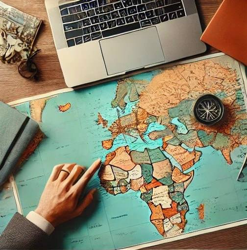
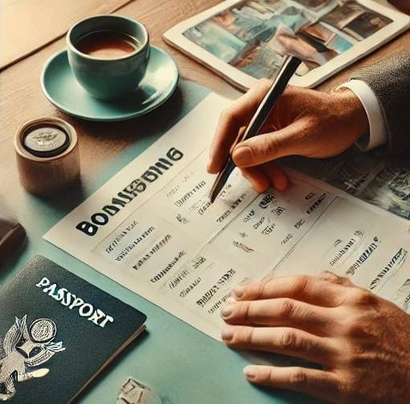
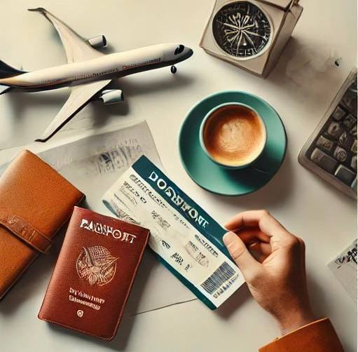

Ласкаво просимо!
Ми пропонуємо унікальні подорожі, які відкривають перед вами нові горизонти. Наша мета — зробити ваші подорожі комфортними, незабутніми та наповненими яскравими враженнями. Кожен тур, який ми організовуємо, ретельно продуманий до деталей, щоб ви могли насолоджуватися відпочинком без зайвих турбот.
Наші досвідчені гіди допоможуть вам розкрити секрети місцевих культур, а комфортний транспорт та організація трансферів дозволять вам подорожувати без стресу. Ми враховуємо ваші інтереси та побажання, щоб створити маршрут, який відповідає саме вашим вподобанням.
Незалежно від того, чи хочете ви досліджувати древні міста, насолоджуватися природною красою чи відпочивати на розкішних пляжах, ми гарантуємо вам найкращий досвід подорожі. Приєднуйтесь до нас і здійсніть свою подорож мрії!
| 1 етап | 2 етап | 3 етап | 4 етап |
|---|---|---|---|
|  |  |  | |
| Дізнатися детальніше | Забронювати квитки | Зв'язатися з нами | Отримати підтримку |
| На першому етапі ми проводимо індивідуальну консультацію, під час якої враховуємо ваші побажання, бюджет та терміни поїздки. | Після вибору туру ми займаємося бронюванням авіаквитків, проживання в готелях, трансферів та екскурсій. | Ми допоможемо вам з підготовкою необхідних документів, включаючи візову підтримку, страхування та інші довідки. | Протягом усього туру ми забезпечуємо цілодобову підтримку у разі будь-яких питань або форс-мажорних ситуацій. |